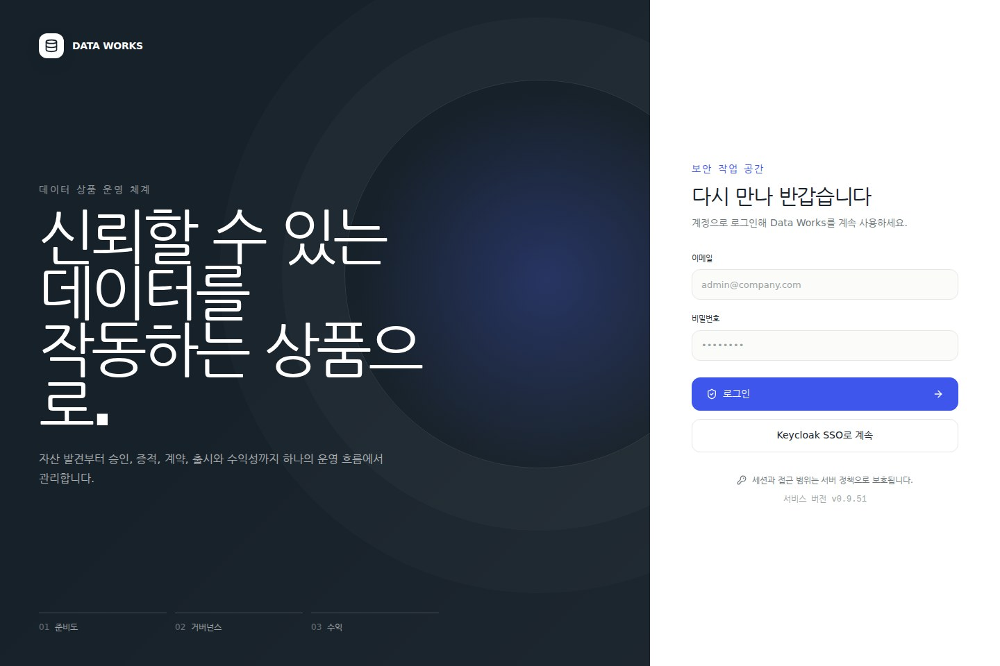
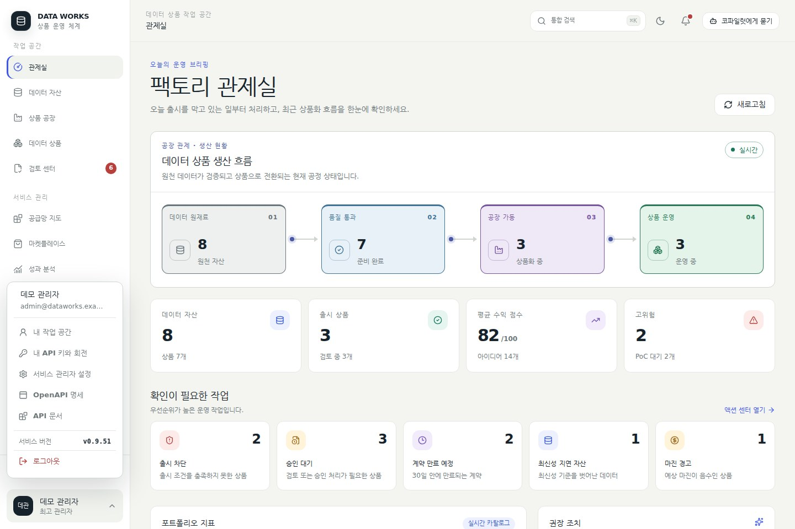
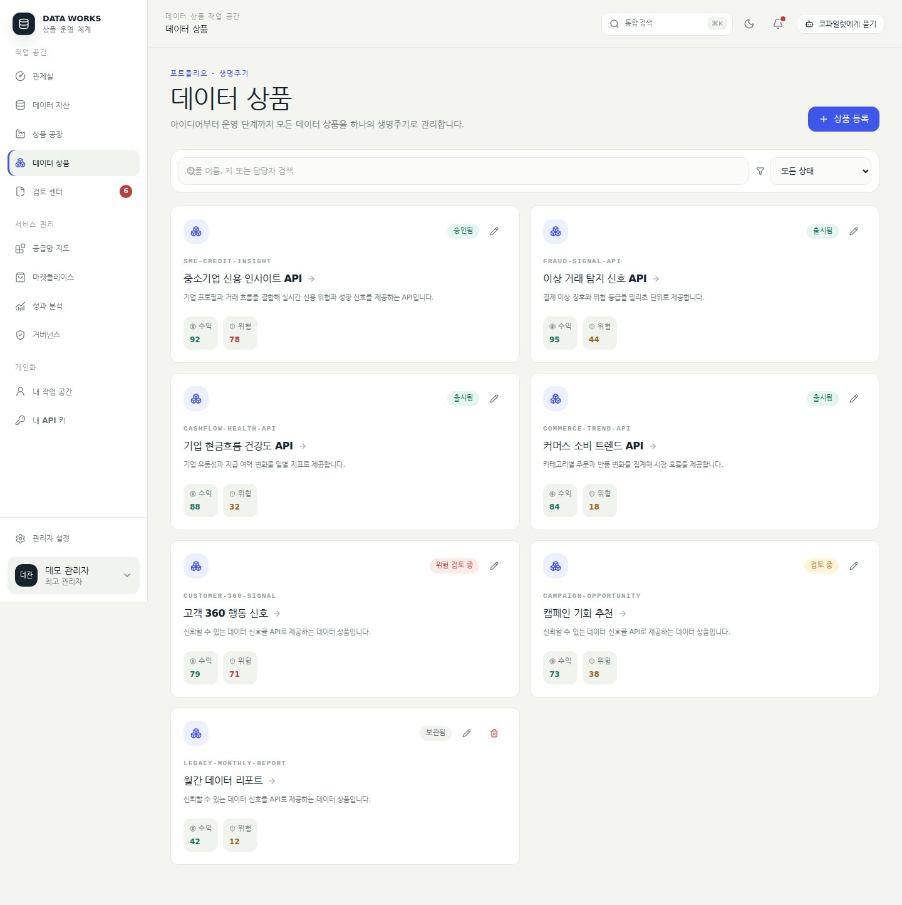
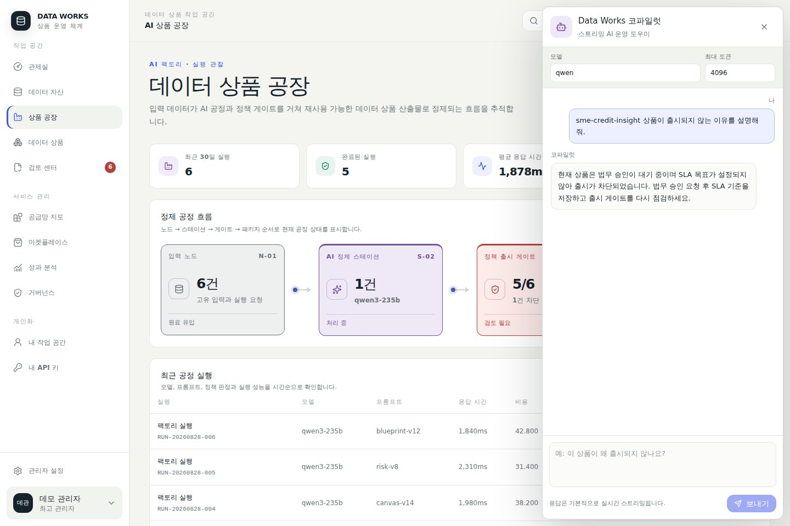
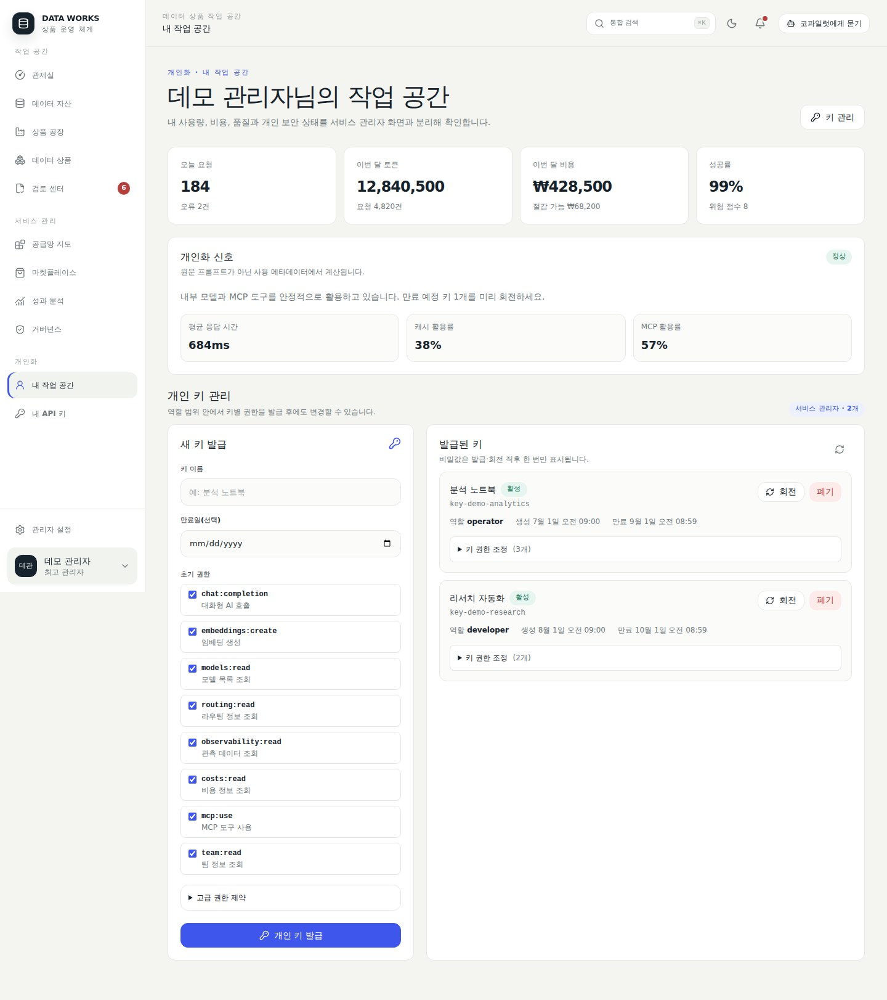

운영 가능한 탭
출시 게이트 조회·상품 출시, 자산 준비도, Canvas 편집·저장, 위험, 승인 추적 추가·갱신, Evidence Pack, append-only 계약 버전 생성
Data Works v0.9.36 · 사용자 문서
관제실에서 처리할 일을 찾고, 상품의 준비도·승인·증적·출시 상태를 확인하며, 개인 API 키와 AI·MCP 연결을 안전하게 관리하는 방법을 설명합니다.
Data Works에는 어떻게 로그인하나요? 서비스의 /dataworks/에서 로컬 계정으로 로그인하거나, 운영자가 Keycloak을 활성화한 경우 Keycloak SSO로 계속을 선택합니다.
| 접속 주소 | 용도와 동작 |
|---|---|
/dataworks/ | 새 React 기반 Data Works 화면의 표준 진입점 |
/dataworks | /dataworks/로 자동 이동 |
/admin | 기존(레거시) 관리자 콘솔이며 새 화면의 진입점은 아님 |
/ | 현재 UI 진입점이 아니며 기본 구성에서는 404 Not Found |
로그인 화면 아래와 로그인 후 프로필 메뉴에서 서비스 버전 v0.9.36를 확인할 수 있습니다. 프로필 메뉴는 내 작업 공간, 내 API 키, 관리자 설정(권한 보유 시), OpenAPI와 Swagger 링크를 제공합니다.

| 메뉴 | 주소 | 주요 용도 |
|---|---|---|
| 관제실 | /dataworks/ | 생산 흐름과 주의 작업 |
| 데이터 자산 | /dataworks/assets | 자산·민감도·준비도 |
| 상품 공장 | /dataworks/factory | AI 실행 이력 |
| 데이터 상품 | /dataworks/products | 상품 목록과 작업 공간 |
| 검토 센터 | /dataworks/review | 차단·승인·만료 경고 |
| 공급망 지도 | /dataworks/portfolio | 자산→상품→API→고객 |
| 마켓플레이스 | /dataworks/marketplace | 출시 상품 탐색 |
| 성과 분석 | /dataworks/analytics | 수익·위험과 생명주기 |
| 거버넌스 | /dataworks/governance | 승인·계약·권한 통제 |
주소 기반 라우팅이므로 새로고침해도 현재 메뉴가 다시 열립니다. 모바일에서는 상단 메뉴 버튼을 사용합니다. Ctrl+K 또는 Cmd+K로 명령 팔레트를 열 수 있습니다.


자산 이름·키·도메인·담당자로 검색하고 도메인과 민감도로 필터링합니다. 준비도는 스키마, 최신성, 결측, 외부 제공 가능성, API와 과금 준비 등을 100점으로 나타냅니다.

입력 노드→AI 정제 스테이션→정책 출시 게이트→상품 패키지 흐름과 최근 30일 실행의 모델, 프롬프트, 비용, 정책 판정과 상태를 확인합니다.

상품을 선택하면 생명주기 Stepper와 상품별 탭이 열립니다. 쓰기 권한이 있으면 목록에서 상품을 생성·수정하고 draft 또는 archived 상태만 삭제하며, 삭제한 상품 키는 보존된 과거 이력을 새 상품이 상속하지 않도록 재사용할 수 없습니다. 상품 작업 공간에서는 상태 전환·Canvas 저장·승인 추적 추가/갱신·계약 버전 생성을 수행합니다.
출시 게이트 조회·상품 출시, 자산 준비도, Canvas 편집·저장, 위험, 승인 추적 추가·갱신, Evidence Pack, append-only 계약 버전 생성
API, 고객, 사용량, 수익, 버전, 활동 이력은 향후 모듈 안내 화면입니다.


상품은 왜 출시되지 않나요? 고위험 또는 민감 상품은 원천 자산 준비도 70 이상, 데이터 오너·법무·준법 승인, Evidence Pack, 미만료 승인 증적을 충족해야 합니다.
게이트가 허용 상태이고 아직 출시되지 않은 상품에는 상품 출시 버튼이 표시됩니다. API도 같은 조건을 적용하며 차단 시 409 Conflict와 차단 이유를 반환합니다.
GET /admin/dataworks/products/{product_key}/publish-gate
POST /admin/dataworks/products/{product_key}/publish검토 센터는 액션 유형과 심각도를 필터링하고 대상 상품으로 연결합니다. 검토 센터 자체는 분류·이동 화면이고, 연결된 상품 작업 공간의 승인 탭에서 승인 추적 항목을 추가하거나 결정·증적·만료 정보를 갱신합니다.

공급망 지도에서는 자산, 상품, API 제공 채널과 고객 성과 관계를 탐색합니다. 마켓플레이스에는 published 상품만 표시되며, 현재 접근 신청과 PoC 요청 제출은 화면에 연결되지 않았습니다.

모델과 최대 토큰을 선택하고 출시 차단 이유, 자산 준비도 또는 다음 조치를 질문합니다. 최대 토큰은 1~262144이며 응답은 SSE로 스트리밍됩니다.

관리자 화면과 분리된 개인화 화면에서 오늘 요청·오류, 월간 토큰·비용, 성공률, 평균 응답 시간, 캐시와 MCP 활용률을 확인합니다. 지표는 원문 프롬프트가 아닌 사용 메타데이터에서 계산됩니다.

키를 발급한 뒤 권한을 바꿀 수 있나요? 예. 활성 키의 Scope, IP, 모델, 공급자, 예산과 만료 정책을 발급 후 변경할 수 있습니다. 단, 현재 사용자 권한보다 넓게 확대할 수 없습니다.
| 정책 | 설명 |
|---|---|
scopes | 대화, 모델 조회, MCP 등 기능 권한 |
allowed_ips | 허용 IP 또는 CIDR |
allowed_models / denied_models | 허용·차단 모델 이름 또는 패턴 |
allowed_providers / denied_providers | 허용·차단 AI 공급자 |
budget_limit_krw | 원화 예산, 0은 무제한 |
expires_at | 키 만료 시각 |

AI 응답은 기본 스트리밍인가요? 예. /v1/chat/completions에서 stream을 생략하면 기본 true가 적용됩니다. 명시한 stream:false는 유지됩니다.
curl -N http://<host>:8080/v1/chat/completions \
-H 'Authorization: Bearer vc_sk_...' \
-H 'Content-Type: application/json' \
-d '{
"model":"qwen",
"max_tokens":4096,
"messages":[{"role":"user","content":"출시 체크리스트를 작성해 줘"}]
}'서비스 출력 토큰 절대 상한은 262144입니다. 관리 상한 또는 연결 모델의 한도가 더 낮으면 더 낮은 값이 우선합니다.
/mcp관리자가 등록한 외부 MCP 서버의 도구·프롬프트·리소스를 집약합니다.
/mcp/gatewayData Works 자체 기능을 MCP 도구로 제공합니다.
{
"mcpServers": {
"dataworks": {
"url": "http://<host>:8080/mcp/gateway",
"headers": {"Authorization": "Bearer vc_sk_..."}
}
}
}키에는 mcp:use Scope가 필요합니다. 연결 템플릿은 GET /me/onboarding-pack?client=mcp|cursor|roo|cline|openai-sdk, 진단은 POST /me/connection-doctor에서 제공합니다.
/openapi.json/swagger/admin/dataworks/products/{product_key}/openapiPOST /v1/data-products/{product_key}/query키의 활성·만료 상태, Scope, IP, 모델, 공급자와 예산 정책을 확인합니다. 회전 후에는 기존 키가 폐기되므로 새 키로 교체합니다.
요청 출력 토큰, 관리자 상한과 모델 한도를 확인합니다. 262144는 서비스 절대 상한이며 모든 모델이 이 값을 지원한다는 뜻은 아닙니다.
API·고객·사용량·수익·버전·활동 이력은 현재 안내 탭입니다. 운영 작업은 관리자 가이드의 REST API 절차를 사용합니다.